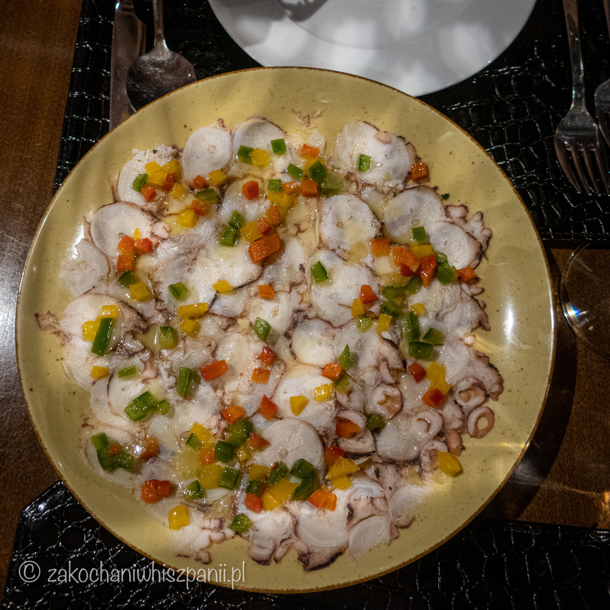

5 inspiracji na wakacyjny weekend. Hiszpania w Polsce?
Pomysły na weekend w Polsce związane z Hiszpanią
!Hola! Dziś przychodzimy z pomysłami na hiszpańskie mini wakacje w Polsce :) Jak dobrze wiesz w czasie koronawirusa, dużo osób rezygnuje z wyjazdu na wakacje do Hiszpanii i zostaje w Polsce. Chętnie podzielimy się z Tobą naszymi pomysłami dzięki którym będąc w Polsce choć na chwilę przeniesiesz się do Hiszpanii na wieczór bądź weekend.
1. Restauracje hiszpańskie
Restauracja Si Señor w Kielcach

Aby poczuć Hiszpanię na talerzu zachęcamy Cię do podróżowania do miast w których są restauracje, bary z kuchnią hiszpańską, czy meksykańską. Świetnym pomysłem jest wycieczka do Kielc gdzie znajduje restauracja Si Señor przy ul. Kozia 3. Jest to miejsce, które przeniesie Cię do krainy hiszpańskich smaków! My byliśmy już kilka razy i jesteśmy zachwyceni jakością produktów, wnętrzem, atmosferą którą tworzą pracownicy wraz z właścicielami. Z pewnością jeszcze nie raz wrócimy do Si Señor. Na blogu jest już nasza relacja z wizyty w Si Señor.
Restauracja La Iberica w Warszawie

Wchodząc do lokalu, pierwsza w oczy rzuca się otwarta kuchnia, która jest sercem restauracji. Widać, jak kucharz przygotowuje na bieżąco dania. Sam lokal jest mały, ale uroczy. Więcej możecie poczytać w osobnym wpisie.
Znamy jeszcze kilka miejsc na mapie kulinarnej Polski, ale o nich wspomnimy innym razem.
2. Wycieczka na pustynię

Autorstwa Manfred Rackelhuhn - Praca własna, CC BY-SA 3.0, Link
By choć przez chwilę poczuć klimat gorącej Hiszpanii polecamy Ci wycieczkę w okolicę małopolskiego Olkusza, na Pustynię Błędowską. Nazywana jest polską Saharą. Jest tam prawie jak na wydmach w Maspalomas na Gran Canarii. Jednak do Pustyni Błędowskiej mamy znacznie bliżej :) Teraz mała ciekawostka dla fanów kina, na polskiej Saharze, kręcono film Faraon.
3. Wieczór filmowy
Oczywiście w naszym zestawieniu nie może zabraknąć również wieczorów filmowych. Uwielbiamy humor, dowcip w komediach hiszpańskich!!! Najczęściej korzystamy z platformy Netflix i HBO. Seriale, które oglądaliśmy do tej pory to między innymi Gran Hotel, Dom z papieru, Telefonistki, Nieposkromiona, El Club, Szkoła dla elit, Dom kwiatów i wiele innych. Oraz filmy Hiszpański temperament, Jak zostać Katalonką, Zabłąkani, czy Puk, puk.
4. Układanie puzzli z widokiem hiszpańskich krajobrazów

W przerwie od oglądania hiszpańskich seriali i filmów, możesz zająć się układaniem puzzli z widokiem na miasto Toledo lub na Park Guell w Barcelonie. W jakim czasie poradzisz sobie z ułożeniem puzzli z 1500 elementów?
5. Hiszpańskie tapas i sangria domowej roboty

Kolejnym pomysłem na przyjemny weekend w stylu hiszpańskim przygotowanie przysmaków kuchni iberyjskiej. W najbliższym sklepie Lidl, kup mix serów hiszpańskich, bagietkę, oliwki i wino. Pamiętaj, że dobrej jakości składniki kuchni hiszpańskiej znajdziesz również w sklepie Ibernia.pl. Przepis na sangrię znajdziesz w naszym wpisie.
Tapas + wino/piwo = Idealny wieczór filmowy ;)
Czekamy również na Twoje pomysły na mini wakacje w Polsce w stylu hiszpańskim. Jakie polecasz miejsca z dobrą kuchnią hiszpańską w Polsce? Chętnie sprawdzimy!!!
Najnowsze wpisy


Tagi